01
One risk at a time
The events that hurt usually need several things in the same window: a control failure, a concentrated supplier, an external shock. Registers still score the pieces apart.
Operational-risk scenarios you can run, review, and defend.
A scenario is a hypothesis. The workbench exists so you can challenge it.
v0.2.0 · Apache 2.0 · Independent research
Most preparation still treats risks one at a time.
The events that hurt usually need several things in the same window: a control failure, a concentrated supplier, an external shock. Registers still score the pieces apart.
A scenario that reads like a prediction is hard to challenge. Atlas Workbench keeps it as a hypothesis, with signposts that can strengthen or fade.
If a language model wrote the number, a reviewer cannot rebuild it. Here, models may draft prose for a person. They never write a score.
Built for research, challenge, and preparedness. Banking is the domain, so the taxonomy stays bounded and public.
Public-source claims stay attached to the record that supports them. Generated narrative never becomes its own source.
Pending items show why they can or cannot be approved. A decision keeps the person, the reason, and the time.
Scores are prioritization aids under stated assumptions. They are research quantities for challenge. They are not capital inputs.
Deterministic analysis runs with no model. Generation, when you turn it on, is a bounded judge-and-revise loop.
Normalize public-source research you supply into cited event records.
Test temporal and thematic patterns, and surface the challenges.
Turn forward-looking signals into an emerging-risk register.
Refresh aging material. Merges and retirements stay gated.
Combine signals and event patterns into candidate scenarios.
Score co-active reviewed signals into compound candidates.
Rank the library on likelihood, impact, controllability, and horizon.
Promote holdout-qualified compounds through the scenario QA gate.
The workbench keeps the original boundaries.
Intake is classified and previewed. Only items you select are stored, and they enter as pending.
Citations stay on the source record. A generated paragraph is not a source.
Merge and retire stay off unless the operator sets ATLAS_AUTO_RETIRE=1. The dashboard cannot flip that switch.
Machine write seams pass the ontology guard, or they do not persist.
A model may draft text for a person to review. No model writes or moves a number.
SQLite, JSON, and local inference. Runtime state lives in one directory, ~/.atlas.
Nothing is written until you select it. Nothing is approved until a person says so.
Paste prose, notes, and literal URLs into one field.
Intake classifies the material and shows a preview.
Only the items you choose continue into review.
A named person approves or returns each item, with a reason on the record.
Analyse the approved corpus. Offline, unless you opt into a local model.
Read the portfolio or an Atlas Brief. Export with provenance and checksums.
Compound rating — two or more risks in one window — is its own research path, kept apart from the library urgency rank.
Each risk is split into how often it happens and how bad it is. The two estimates stay separate, then recombine.
Co-occurrence starts from independence. Thin shared history moves the estimate a little. Strong history moves it a lot.
Monte Carlo counts how often a combination lands. An extreme-value overlay stays only when its own stability test passes.
Pass marks were written down first. Failures sit beside passes. Every published digit can be rebuilt from a stored file, seed included.
On a simulated world with a planted answer, the method recovers that structure. That shows the machinery works. It is not yet evidence about the real world. On public history, shared quarters are still too thin for the dependence layer to add signal, and the estimator under-prices never-yet-seen pairs. The paper says so. Loss sizes are not yet validated. These numbers are for prioritization and challenge.
Same engine and provenance rules. A shorter path to a working bench.
Runtime state lives in one directory, ~/.atlas.
Map or table, comparison, and saved views.
One scenario, with its evidence and its caveats.
Every waiting item shows why it can move.
External drivers, maturity, momentum, signposts.
PDF, Word, Excel, PowerPoint, with checksums.
Each one is explicit. None of them silently changes a score.
A pinned local import of an official release. A person proposes a technique. A decision approves it. Display only. If the scenario changes, the old approval goes stale. A mapping means a reviewer found the technique useful for the hypothesis. It is not an attribution, and case studies are not evidence for the scenario.
A separate workspace for services, owners, tolerances, dependencies, controls, actions, and exercises. Coverage distinguishes unassessed, mapped, and evidenced tests. An empty cell stays empty. It is not marked safe.
An external-driver overlay with maturity, momentum, transmission path, and signposts. Scout can propose public-source leads. It stays outside the pipeline and never promotes a lead into evidence.
An evaluation workbench. Ranking, calibration, and operational readiness are separate verdicts.
Python 3.12 or 3.13. The deterministic path needs no model.
atlas upFirst run. Create the data directory, load the demo, open the dashboard.atlas demoReload the fictional corpus. Pass --reset to start clean.atlas runAnalyse the approved corpus. Offline and deterministic by default.atlas statusLibrary counts, the review queue, and the last run.atlas doctorCheck Python, stores, the guard bundle, the model endpoint, and the port.atlas serveOpen the dashboard. Loads the demo if you have no data yet.A fictional corpus, on your machine, in one command.
The scoring paper publishes the failures beside the passes.
That is the use of the workbench.
github.com/sw30labs/atlas-workbench
Code is Apache 2.0. Data and documentation have their own terms. Outputs are hypothetical research artifacts.
Six screens from the fictional demo, captured on a loopback dashboard. Every scenario card is tagged synthetic fixture. The header reads OMLX online. The intake draft is in Appendix B.
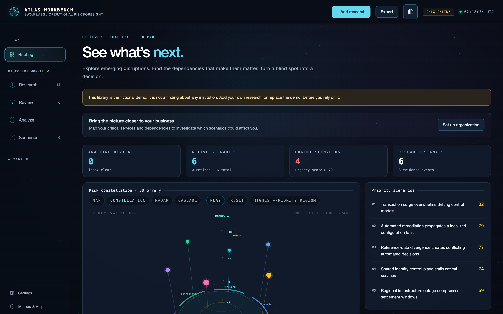
The briefing, in constellation view. Six fictional scenarios sit on shared cores: processing, physical, financial, and third-party.
Urgency on the list is the library rank, kept apart from the compound score.
On this screen. Header reads OMLX ONLINE. Six stars. Visible ranks: 82, 79, 77, 74, 69.
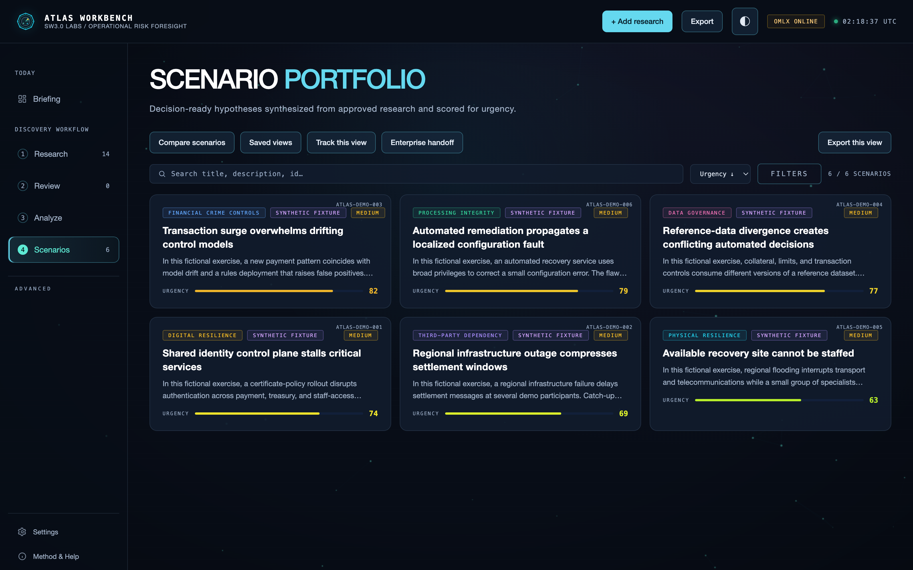
Every card is tagged synthetic fixture. Each description opens with “In this fictional exercise.”
The demo seed loaded this set. Nothing on the page was generated during the capture.
On this screen. Urgency bars: 82, 79, 77, 74, 69, 63. All six scenarios are on screen.
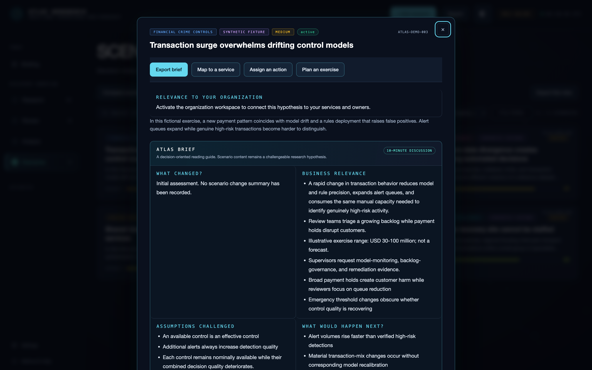
Opened from the portfolio. The brief says the scenario remains a challengeable research hypothesis.
Applicability to a real service has not been assessed. The loss line is an exercise range.
On this screen. USD 30–100 million on this card. The screen says it is not a forecast.
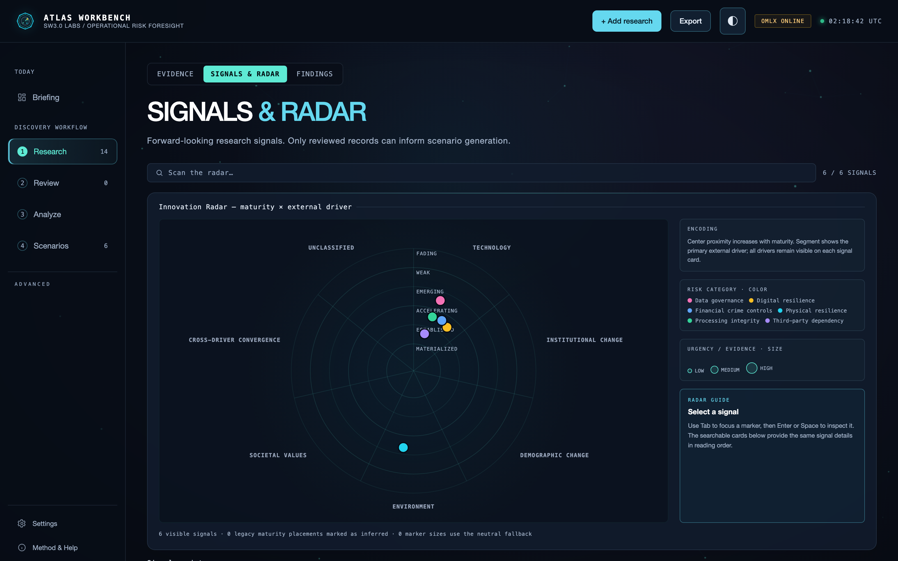
Six research signals, plotted by maturity and external driver. Only reviewed records can inform scenario generation.
The radar proposes a reading. It does not write evidence, and it does not change a score.
On this screen. Five signals sit near the center. One sits toward Environment.
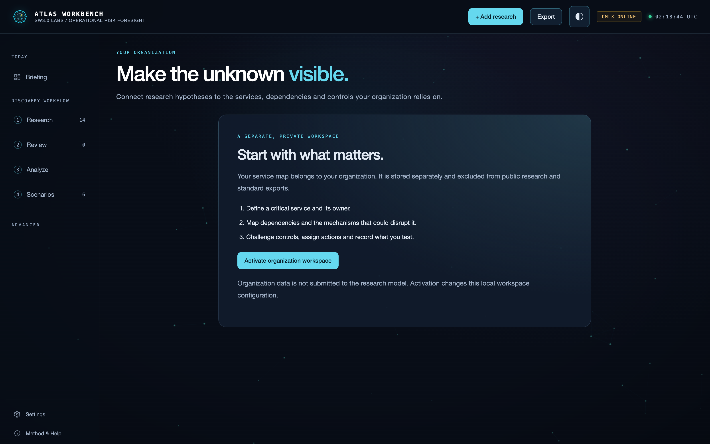
The workspace is not activated. No service has been named, so there is no coverage to measure.
Activation stays on this machine. Organization data is not submitted to the research model.
On this screen. The start state asks for a service, its dependencies, and a test of its controls. An empty start is not a risk clearance.
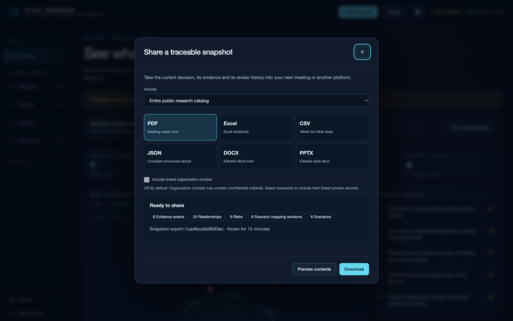
Share dialog for the entire public research catalog. Preview contents was clicked, and the dialog returned these counts.
Organization context is unchecked. The snapshot is frozen for fifteen minutes. Download was not taken.
On this screen. 8 evidence events, 24 relationships, 6 risks, 6 mapping revisions, 6 scenarios.
The same demo, walked in order, with the local model online. A public note was prepared. No candidate came back. Nothing was sent. The seeded library was already approved. No pipeline run was started.
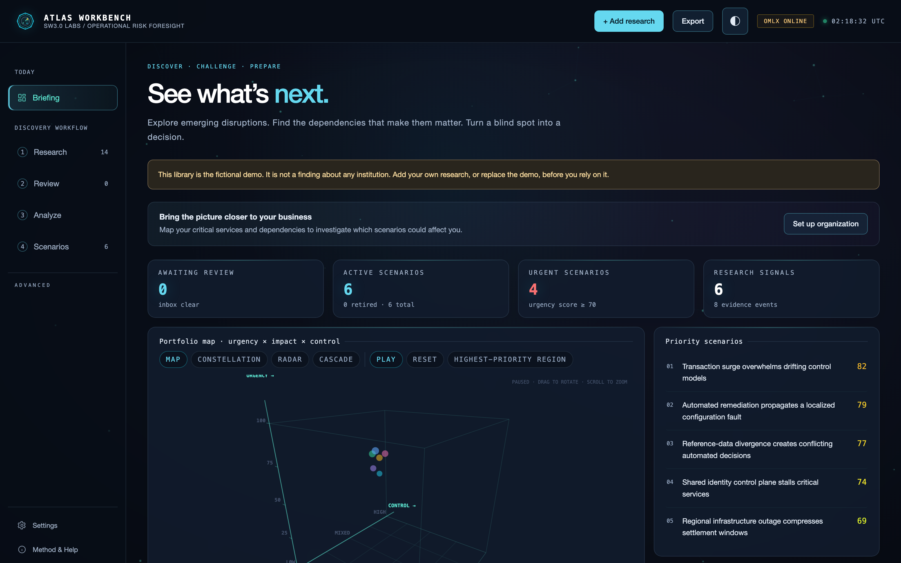
Header reads OMLX ONLINE. Six active scenarios, four at library urgency of 70 or higher, eight evidence events, and a clear inbox. The portfolio map is paused.
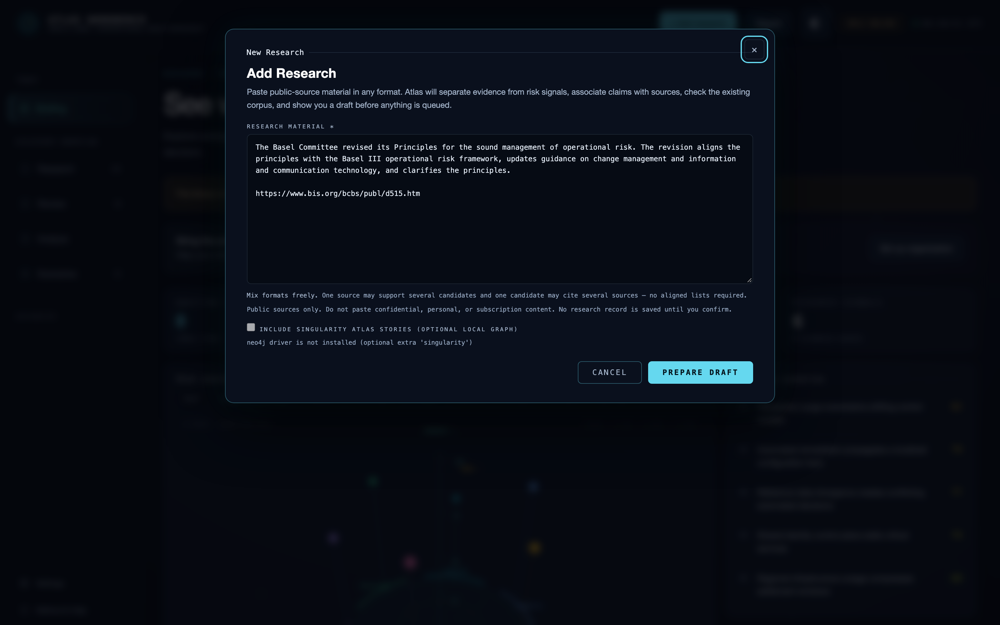
A Basel Committee page URL, pasted with a short paraphrase of that page. Prepare draft is enabled. The graph option stays off. Nothing is saved until you confirm.
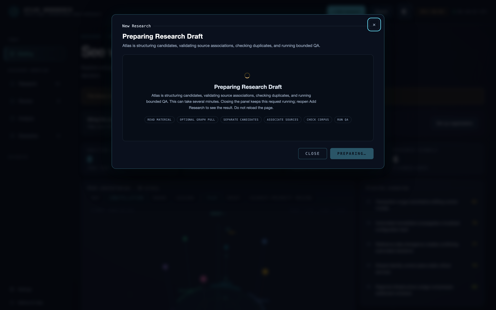
Atlas is structuring candidates and running bounded QA. The button reads Preparing. The panel says this can take several minutes.
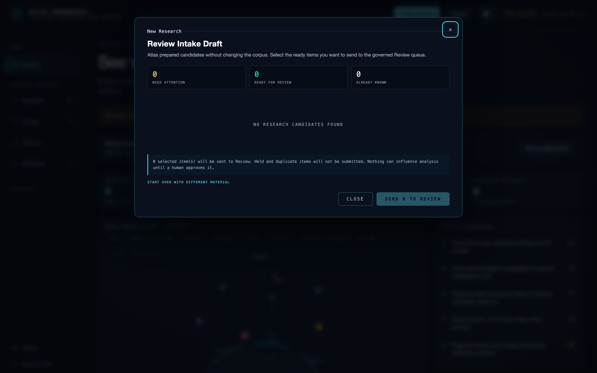
No research candidates were found. Send 0 to Review stays disabled. It was not sent and not approved. It is not a finding.
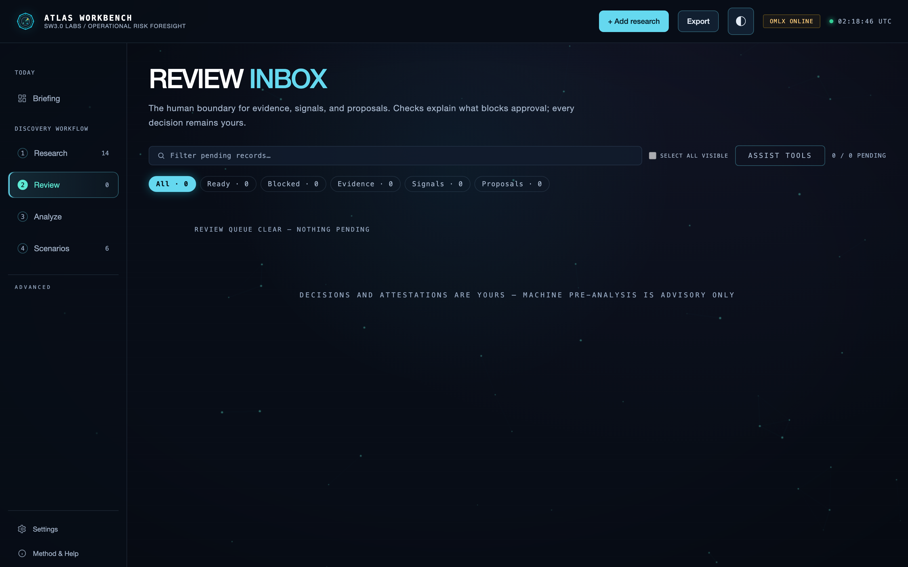
The queue still reads clear. Nothing was submitted, so nothing is pending. Decisions stay with a person.
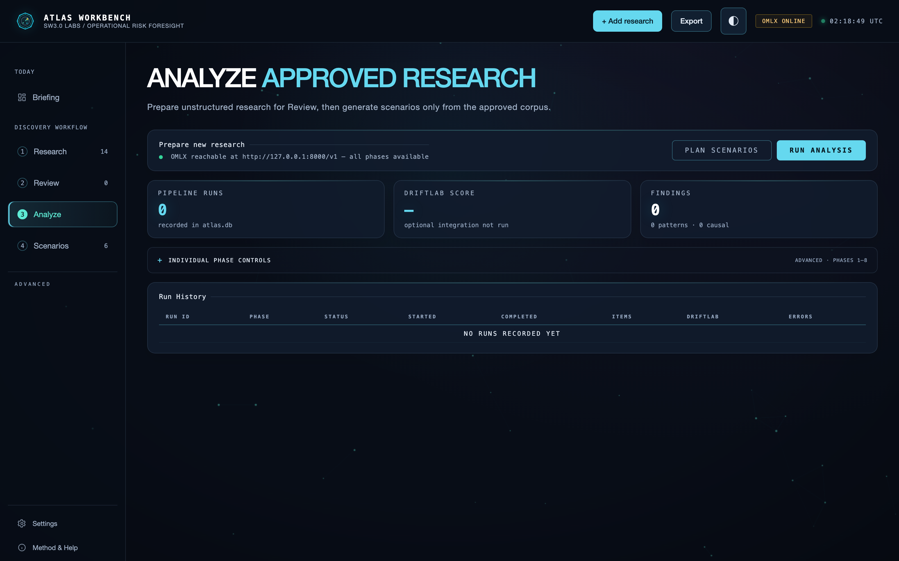
OMLX is reachable at 127.0.0.1:8000/v1. The screen says all phases are available. Pipeline runs: 0. DriftLab has not been run. Findings: 0.
Preview only. Download was not taken.
export-1cadfecdde8693ec · frozen 15 minutes · organization context off
A draft was prepared. No candidate was found, so nothing was sent or approved. No pipeline run was started. Findings stayed at 0. DriftLab was not run, and no compounds were joined.